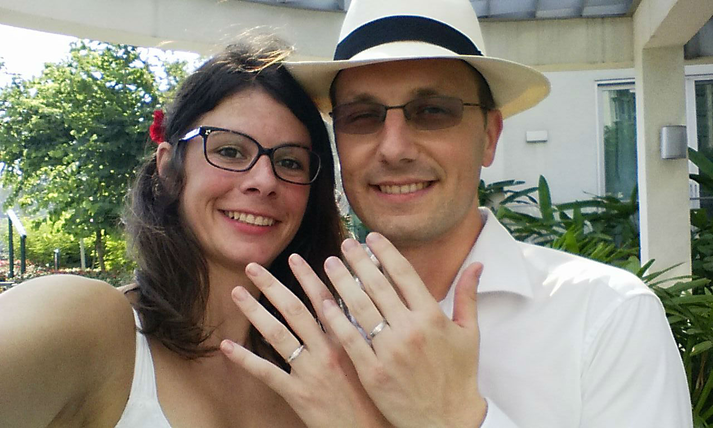

MARINE & AXEL
VOUS INVITENT
A FETER
LEUR MARIAGE
LE 27 AOUT 2016 | 18h00 | RISCLE
Comme vous le savez déjà, nous nous sommes mariés à Singapour, mais nous le serons réellement quans nous l'aurons feté avec vous !


Afin de nous aider à prévoir les repas, on vous remercie de bien vouloir nous envoyer votre intention de présence avant le 15 mars par mail avec les informations suivantes :
- Présence pour la fete du samedi 27 aout
- Combien de personnes vous serez
- Si vous dormez sur place, combien de tentes vous prévoyez
- Pour les personnes arrivant de loin, merci de nous préciser également quand vous arriverez et repartirez pour que l'on vous prévoit dans les repas
Il sera bien sûr possible de modifier votre réponse, et de nous confirmer votre présence avant le 14 juillet (facile a retenir comme date, non ? :) ).
Comment venir
- Domaine de l'Archerot
- 32 400 RISCLE
- Coordonnees GPS : 43.632826, -0.117326
- Mont de Marsan
- Pau
- Tarbes
- Orthez
- Dax
- Pau
- Tarbes
- Lourdes
- Biarritz
- Bordeaux
- Toulouse
Dans la mesure du possible, nous essaierons de faciliter les transports en mettant en relation les personnes prévoyant de faire les mêmes trajets, si ca nous est communiqué à l'avance bien sûr...
Où dormir
- Vous aurez la possibilité de planter la tente sur place au Domaine
- Pour louer un logement dans les environs, vous pouvez consulter le site de l'office de tourisme de Riscle
- Astuce : même si ce n'est pas le coin le plus touristique de France, les logements sont complets assez tot dans la région, n'hesitez pas à réserver au plus tot.
Bon à savoir
- Pour le cadeau, blablabla
- Venez comme vous etes ! Il n'y aura pas de cérémonie à l'église ni à la mairie, donc chacun est invité à s'habiller comme il le souhaite.